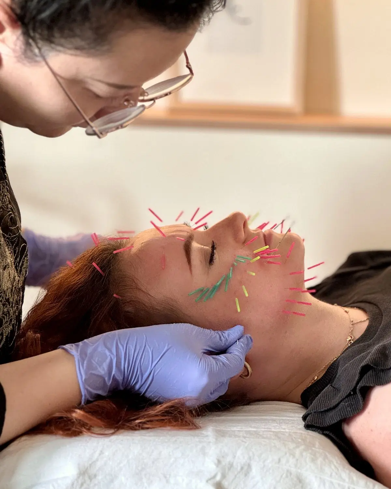

Facial acupuncture · Slovakia
D. wanted a natural alternative to injectables. Facial meridian massage, very fine needles and gentle electroacupuncture.
“I can definitely see a difference in my jawline.”
Read the story →
“
A dialogue with the doctor is really an opportunity to talk to your body.
C. · France
Chinese medicine · France
C. wanted her symptoms explained together rather than separately. A full diagnosis, an acupuncture course, ear seeds and daily adjustments.
Read the story →

Family · Philippines
Back-to-back consultations so the family could stay together — each with their own diagnosis and treatment.
“It felt personal for each of us, even though we came together.”
Read the story →

Chinese medicine · United Kingdom
L. arrived with several small things that felt out of balance rather than one complaint — and left with an explanation of how they connect.
“He really could see a lot of different things altogether.”
Read the story →
“
We got so lucky, because the language can be challenging…
N.’s family · Morocco
Family · Morocco
Coordinated entirely with her daughter from abroad, N.’s consultation ran seamlessly across languages.
Read the story →

Cultural wellness · Spain
A half-day of Chinese medicine and cultural practice, paced so nobody felt rushed.
“It was the part of the trip we talked about most afterwards.”
Read the story →

Industry visit · Europe
A curated route across our partner network — clinic, screening facility and traditional practice house.
“The traditional and the modern sit side by side here.”
Read the story →
“
I could feel the difference straight away — and now I know what to change.
J. · International guest
Tension & posture
Tuina and acupuncture for tension built up from desk work and long-haul travel — plus what was driving it.
Read the story →